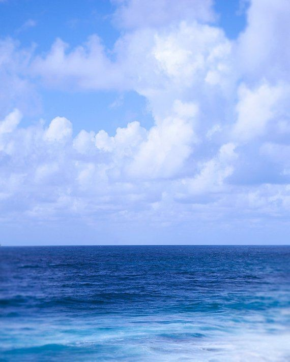
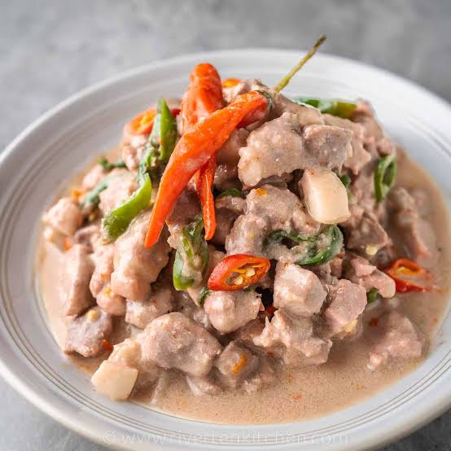

"MY FAVORITE COLOR"
The color blue resonates with me deeply. It's the hue of the sky and the ocean, vast and infinite, much like the potential I see in technology and sports. It's a color that calms the spirit and ignites the imagination, reflecting my own tranquil yet ambitious nature.
"MY FAVORITE FOOD"
My palate craves the fiery zest of Bicol Express, a dish that mirrors my own inclination for intensity and flavor. The spicy kick is a reminder that life is to be lived fully and savored with a bit of spice to keep things interesting.
In my free time, I'm committed to staying fit and active. Workouts are an integral part of my routine, a discipline that strengthens not just the body but also the mind. It's during these sessions that I push my limits and discover new strengths.
In essence, my life is a blend of technology, sports, and the simple pleasures that bring joy and color to my days. Each aspect of my life fuels the other, creating a dynamic balance that propels me forward. Whether I'm troubleshooting a network, scoring a goal, or simply enjoying the world on my bike, I'm always moving towards becoming a better version of myself, one step, one pedal, and one code at a time.